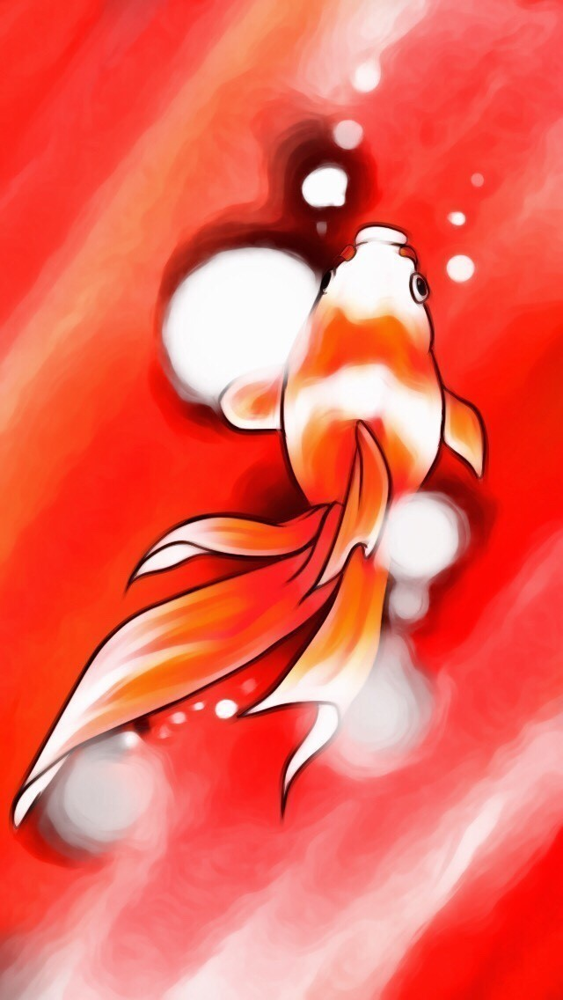

貴方には親友がいますか。
私には幸いなことにいます。
彼は私と同じく、創作を趣味としています。
私が文章を綴っている時に、彼は絵を書いています。
彼とは一度共作をしたことがあります。
今、noteでも連載中の小説『旅せよ日和見金魚』のイラストを描いてもらったのです。
実は短編小説『日和見金魚』をえらく気に入ってくれた彼を喜ばせたいがために、続きを書いたといっても過言ではありません。
イラストを依頼すると、心よく引き受けてくれました。1ヵ月ほどで、彼は忙しい合間を縫って描いてくれました。

金魚の躍動感が伝わってくるかのようです。
お互いの生き甲斐でもある創作活動で共同作業をすることは、とても刺激になります。フィールドは違えど、"負けていられない"という気持ちが何処かで芽生えたのも確かなのです。
もしかしたら、彼は親友でもあり、実はライバルなのかもしれません。
もう10年近くの付き合いになります。
そのため、顔を見るだけで何となく心の内が分かってしまいます。覗かないようにしていても、やはり分かってしまうのです。
だから、心の距離を簡単につめることも可能です。でも、それは無粋なことのようにも感じます。親友だからこそ、ちょうどいい距離感があるんだ、と私は勝手に思っています。
最初は単なる知り合いに過ぎなかった彼と偶然同じグループで行動することになり、その活動が終わっても私たちは自然と離れなかった。それはいわゆる波長が合っていたとか、相性がいいということもあったでしょう。
でも、私はそれ以外にも親友になれた要素があったんじゃないか、と最近思います。
お互いに憧れを抱き、尊敬できる面を持ち得たこと。そんな気持ちがあったから、ここまで関係を続けてこれたのだと。
誤解を恐れずに言います。
親友といえど他者である以上、全てを分かり合えることはできません。だから、自分と真反対の考えや行動をすることもあるかもしれません。
でも、私はそれを最大限尊重したい。本能が拒否し失望に駆られるかもしれないけど、それでも私は彼を否定できない。それ位、大きな存在であることは確かです。
親友はお金では買えない。
見知らぬ人に「これから私の親友になって」とお願いしてなれるものでもない。
心を通じ合わせながら一緒に過ごした時間が育ててくれた、かけがえのない存在。
これからも、今までのようにお互いの環境や心境は変わっていくけれど、彼の存在だけはそのままでいてほしい。
矛盾した気持ちを秘めつつ、今日も彼が精一杯生きている世界で私も負けじと生きていこう、そう思った朝でした。